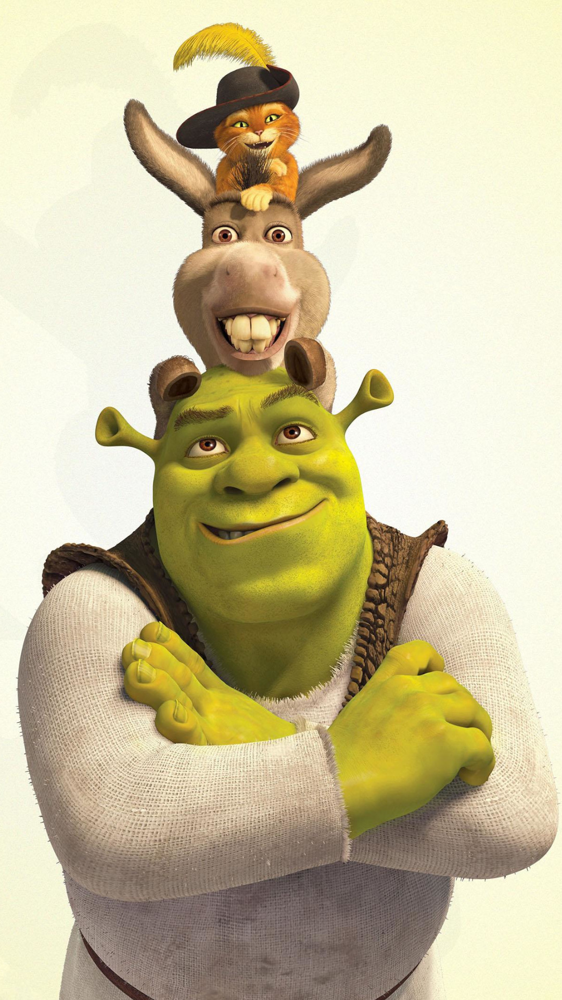
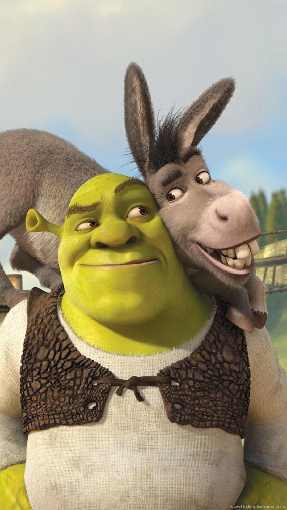
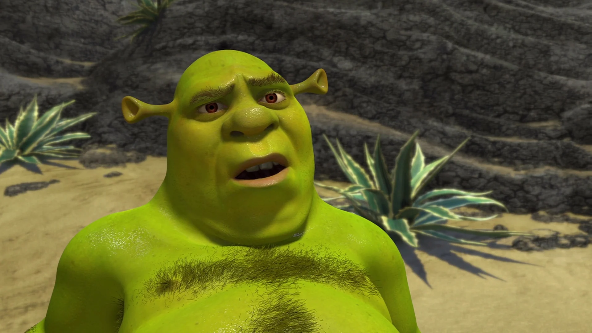
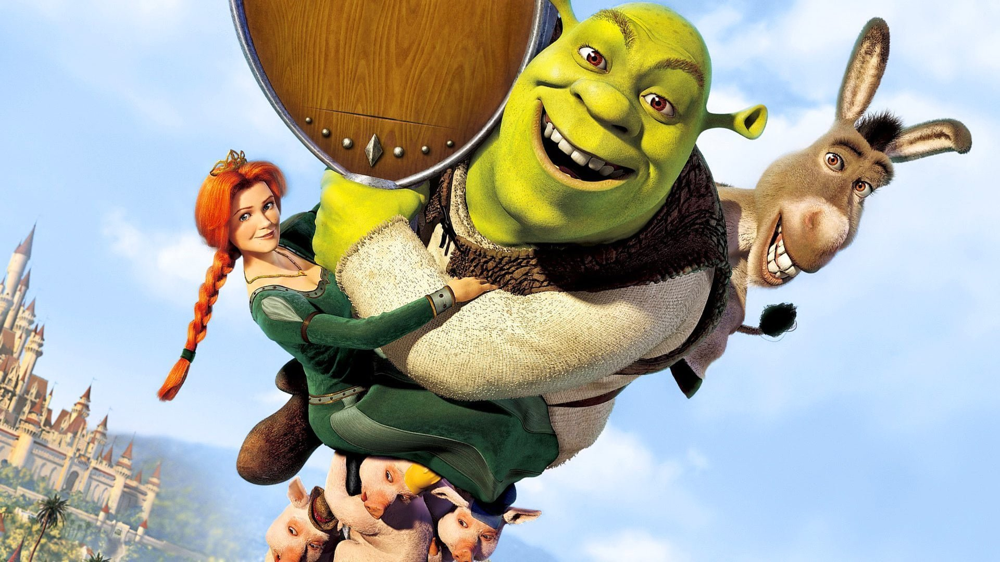
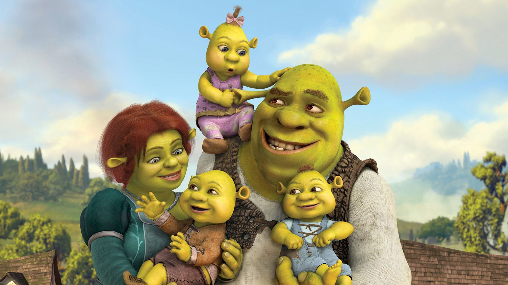

Shrek
| Shrek – fikcyjna postać tytułowa z cyklu pełnometrażowych filmów animowanych Shrek produkcji amerykańskiej oraz z książki stanowiącej pierwowzór dla filmów. Nazwa Shrek pochodzi od niem. Schreck oznaczającego strach, lęk. Shrek jest straszącym ludzi ogrem. Mieszka na bagnie, z dala od ludzi, jak i innych magicznych stworzeń, jego bagno przyozdobione jest znakami mającymi odstraszać potencjalnych gości od dalszego zapuszczania się w głąb posesji Shreka. Shrek jest nieufny ludziom, jak wspomina w późniejszej części filmu, „[...] to nie ja się tutaj czepiam, [...] to świat z jakiś względów musi się czepiać mnie. Ludzie widzą mnie i wrzeszczą [...], oceniają mnie choć nic o mnie nie wiedzą. Dlatego jestem sam.”. Taki sposób podejścia do ogrów jest powszechny wśród ludzi świata przedstawionego, ogry są powszechnie uznawane za gorszą od ludzi rasę barbarzyńców i nieczułych bestii, sam Lord Farquaad (i krótko również Fiona) mówiąc o Shreku używają formy „to”, jak i utwierdzają się w micie jakoby ogry nic nie czuły. Lata bycia traktowanym i postrzeganym jako wielki zły ogr wykształciły w nim taki system reakcji obronnych, w którym to przyjmuje on narzuconą mu rolę wielkiego złego ogra i odstrasza innych od siebie, aby uniknąć możliwych rozczarowań. |
CiekawostkiNazwa „Shrek” pochodzi od niemieckiego słowa Schreck i oznacza „strach”. Postać Shreka nie została stworzona przez DreamWorks. Pierwszy raz ogr pojawił się w książce Williama Steiga pt.: "Shrek!". Postać Shreka może byś inspirowane Maurice Tillet, francuskim profesjonalnym wrestlerem. DreamWorks nigdy nie skomentował tej sprawy, więc może to być plotka. Pierwotnie głos Shreka miał podkładać Chris Farley, ale zmarł w grudniu 1997 roku. Zrobił 90% projektu. Ostatecznie głosu użycza Mike Myers. Według gry Shrek 2, Ogr waży 450 funtów, czyli około 204 kilogramów. |
CharakterBohater na początku był typem samotnika. Do szczęścia wystarczały mu on i jego bagno, jednak pod wpływem Fiony stał się łagodniejszy, romantyczny i rodzinny, choć jego dawny charakter czasami odzywał się, powodując duże szkody. Zazwyczaj zwyciężało jego nowe „ja”, ratując rodzinę z opresji i kryzysów. |
WyglądShrek jest zielonoskórym ogrem o dość masywnej budowie. Posiada wielką głowę, duży nos, długie usta rozciągające się prawie „od ucha do ucha” oraz brązowe oczy, a także uszy ufoludka. Nosi na sobie szmacianą tunikę, na którą zarzucone jest coś w rodzaju skórzanego męskiego bolerka. W związku z tym, że żyje on prawdopodobnie w średniowieczu, nosi brązowe pończochy i ciemne buty. |
|  |  |
|  |  |  |